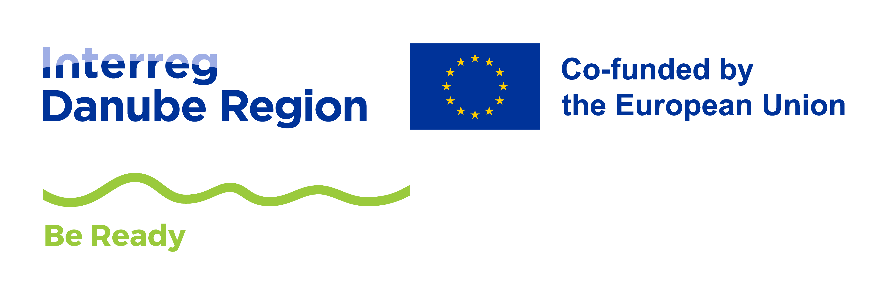

Nástroj pro starosty a zastupitele obcíPrůvodce diagnostikuje klimatickou výzvu Vaší obce a nasměruje vás k odpovídajícímu řešení, od lokálních opatření přes krajinářsko-architektonický průzkum až po komplexní urbanistickou transformaci.
Výzva — Přehřívání, záplavy nebo sucho: kde a jak naléhavě?
Kapacity:Rozpočet, odbornost a kde potřebujete pomoc.
ZáměrRychlá reakce, odborný plán nebo komplexní transformace?
2–4 otázky · Přibližně 4 minuty · Vaše odpovědi nejsou nikam odesílány